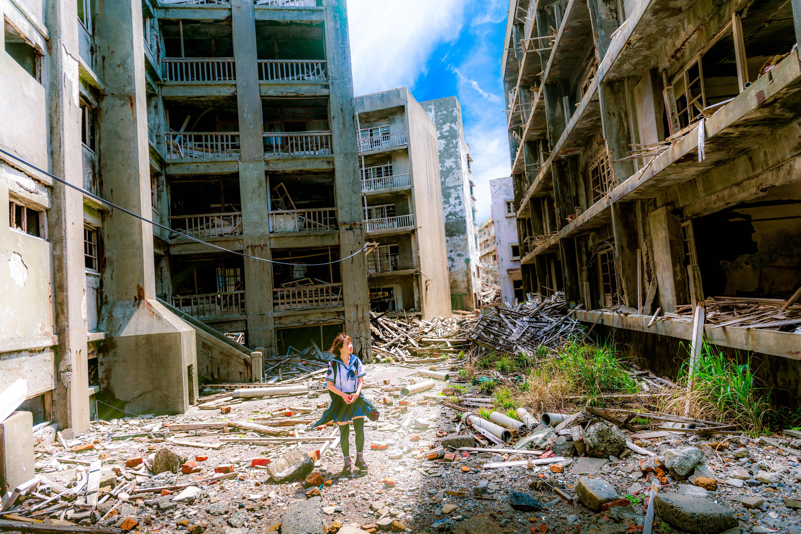
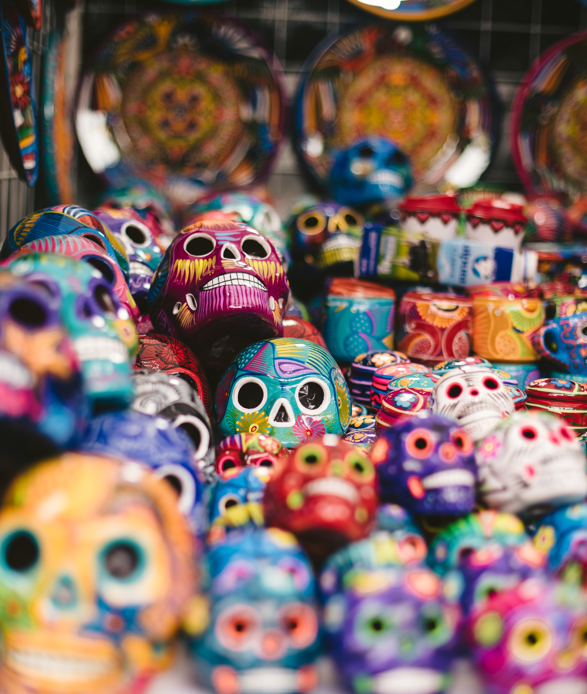
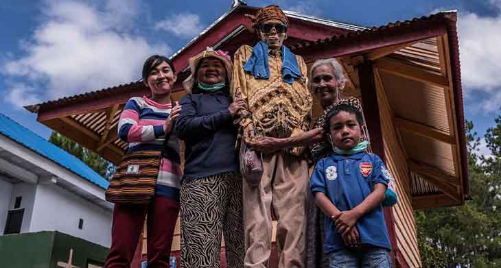

Mexico
In this celebration, the Mexican people welcome the dead back with joy and festivity. It's a time of reunion between the two worlds, where the living celebrate and honor their deceased loved ones...
The subject of death is by no means a contemporary discussion. Throughout history numerous philosophers, historians, sociologists, biologists, anthropologists and psychologists have explored this question. This is because death does not fit into a specific category; it transcends history and is, above all, an inherently human issue. Just like birth, death is an intrinsic element of the human life cycle. Therefore, from a biological point of view, it is a completely natural phenomenon. However, human beings are different, human being is distinguished, above all, by their ability to attribute symbolic meanings and values to experiences. experiences. As a result, the meaning of death is highly variable throughout history and between different human cultures. between different human cultures.
From the Middle Ages onwards, the European vision we have today began to emerge. series of negative connotations began to be attached to death: dark, macabre ideas, as well as conceptions of torture and suffering came to be associated with death, generating a deep discomfort in people this disturbing event. If we think about our society today, we see that death is always by our side. deaths from various causes: epidemics, wars, famine, accidents, illnesses,
catastrophes, etc. etc. We can therefore define death as "typical", even becoming the subject of in newspapers, on television and on websites, everywhere we look someone is telling us about a tragedy. is telling of a tragedy.
war is one of the most tragic and devastating events in human history, and one of its most painful one of its most painful consequences is the large-scale loss of human life caused by the wars that have been over the last 130 years. Often civilians, including children, the elderly and people not involved in the conflict, are killed or wounded. in the conflict, are killed or injured as a result of military attacks on military targets. Such collateral collateral damage is a sad reality of modern warfare. We can then cite the first world war with approximately 20 million dead, the second which caused the deaths of around 60 million people,

the Vietnam war with around 1,100,000 deaths. In addition to current wars such as the war in Ukraine with almost 500,000 dead and the Palestinian-Israeli war with 3,785 Palestinians and 1,403 Israelis and increasing every day.
In contemporary Western society, death is often associated with concepts such as failure, impotence and shame. There is a tendency to try to avoid death at all costs, discovering rejuvenation formulas and prolonging youth and beauty. rejuvenation and prolonging youth and beauty."Contemporary man lives with the constant worry worry that a threat could appear at any moment, as if a bomb could fall from the sky at any moment. any moment.
So it's not surprising that, faced with this feeling of lack of control over their lives, people over life, people increasingly seek to protect themselves psychologically against death. death." Kübler-Ross (1997). The reduction in social vulnerability, resulting from the modern organization around death, does not eliminates, evidently, the complexity that death represents for the individual. The abundance of knowledge and medical advances related to health and the extension of human life, combined with the growing emphasis on individualization, made people start to consider the
issue of death throughout their entire life. existence. The mass media, for example, disseminate an increasing volume of specialized information on the risks associated with smoking, inadequate diet, sedentary lifestyle, among other aspects. Thus, at the same time that the modern organization around death seeks to minimize the impact disruptive of its inevitable occurrence in people's productive routine, it also places the responsibility for maintaining bodily health lies in the hands of individuals. The result of this process is double: on the one hand, death is often seen subjectively as a technical failure or a accident; on the other hand, it can be seen as a kind of punishment for a life considered inappropriate or disorderly. Even with the growth of the Western vision, many parts of the world still have their own visions negative or not about death with rites and traditions that continue to this day, see some of them below:
The research we conducted aimed to provide a clearer picture of opinions, fears, hopes and philosophies that people have regarding death. Through a questionnaire, we sought to capture the differences in people's views on death, from the religious and spiritual dimensions and legacies personal. In this study, we will share the results that emerged from public responses, contributing to a deeper understanding of diverse perspectives and attitudes towards death. After all, this research not only offers clearer insight into how people approach the end of life, but also highlights the importance of openly discussing this universal topic, which invariably touches us all.
The audience of 38 people was asked the following questions: “What do you think about death?” 31.6% responded that it was the end of everything, 18.4% responded that it was not thought about, 15.8 responded that it was what the interviewee's religion dictated, 15.8% that it was what the said philosophy, 13.2% preferred not to talk about it; “Are you afraid of death?” 47.4% answered yes, 31.6% answered no and another 21.1% maybe; “Would you like to know more about the subject?” 81.6% answered yes while 18.4% answered no.

In this celebration, the Mexican people welcome the dead back with joy and festivity. It's a time of reunion between the two worlds, where the living celebrate and honor their deceased loved ones...
In Japan, the wake is a ceremony that involves a series of deeply felt rituals and traditions. rooted in Japanese culture. The Japanese approach to death is influenced by Buddhism and Shintoism...

The Ma'Nene ritual, performed in some parts of Indonesia, is a unique and peculiar tradition that involves exhumation of the bodies of the deceased and their subsequent cleaning, dressing and reburial...